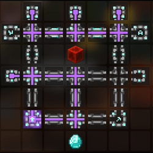

Gold is an ore that is found throughout the mining islands, but is most commonly mined in the Mines of Divan, which can be found in the Crystal Hollows.
Gold spawns here in a large quantity, so it is perfect for grinding collection.
The recommended mithril powder to start gold mining is 3.9m mithril powder, so you are able to max mining speed 1 and mining fortune 1.
Efficient miner doesnt work on mines of divan gold, so powder doesnt need to be put into it.
The recommended gemstone powder for gold mining is 7.4m gemstone powder, so you are able to max mining speed 2 and mining fortune 2 for max rates.
3/4 Mineral Armor with 1/4 divan
Legendary bal with quick claw
Maxed Divan's drill (preferably, can be done with a 655 tho)
Any drill with a blue cheese goblin omelette
Other mining essentials like equipment, talismans etc should be used.
Use a wishing compass at the entrance of the mithril deposits, if the game tells you "The Wishing Compass can't seem to locate anything! (16)"
there is no MoD in your lobby if the compass works follow the compass towards the Mines Of Divan
you can use Neu's wishing compass solver to get the exact cords of the structure (if there is one in the lobby) after you used it two times.
You want to repeat this process until you find a mines of divan where you can mine the gold blocks while having the bal buff activated
the best type of MoD is the one where you dont have to dig down while still staying at y64
36k mining speed is required to instamine gold blocks, this require 6.5k mining speed with bal or 7.2k mining speed without bal
when using a blue cheese goblin omelette on your secondary drill or with 9k base mining speed without using a blue cheese goblin omelette
Collection for Golden dragon perk
30m/h+